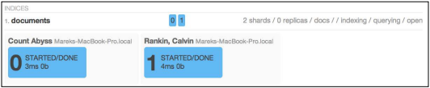
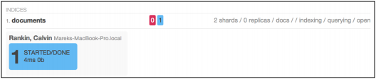

路由功能浅谈
在本章 选择恰当的分片数量和分片副本数量 一节中，已经提到使用路由功能可以只在一个分片上执行查询命令，作为提高系统吞吐量的一种解决方案。接下来作者将详细地介绍这一功能。
分片和分片中数据
通常情况下，ElasticSearch是如何把数据分发到各个分片中，哪个分片存储哪一类的文档等细节并不重要。因为查询时，将查询命令分发到每个分片就OK了。唯一的关键点在于算法，将数据均等地分配到各个分片的算法。在删除或者更新文档时，情况就会变得有点复杂了。实际上，这也不是什么大问题。只要保证分片算法在处理文档时，对于相同的文档标识生成相同的映射值就可以了。如果我们有这样的分片算法，ElasticSearch就知道在处理文档时，如何定位到正确的分片。但是，在选择文档的存储分片时，采用一个更加智能的办法不就更省事儿了吗？比如，把某一特定类型的书籍存储到特定的分片上去，这样在搜索这一类书籍的时候就可以避免搜索其它的分片，也就避免了多个分片搜索结果的合并。这就是路由功能(routing)的用武之地。路由功能向ElasticSearch提供一种信息来决定哪些分片用于存储和查询。同一个路由值将映射到同一个分片。这基本上就是在说：“通过使用用户提供的路由值，就可以做到定向存储，定向搜索。”
路由功能的简单应用
我们将通过一个例子来说明ElasticSearch是如何分配分片，哪些文档会存储在特定的分片上这一过程，为了使细节更清楚，我们借助一个第三方插件。这个插件将帮助我们更生动形象地了解ElasticSearch处理数据的过程。用如下的命令来安装插件：
bin/plugin -install karmi/elasticsearch-paramedic
重启ElasticSearch后，用浏览器打开http://localhost:9200/_plugin/paramedic/index.html 我们将能看到显示索引的各种信息的统计结果的页面。例如：最值得关注的信息是集群的状态和每个索引下分片及分片副本的相关信息。
启动两个节点的ElasticSearch集群，用如下的命令创建索引：
curl -XPUT localhost:9200/documents -d '{settings: {}'number\_of\_replicas: 0,}
number\_of\_shards: 2
我们创建了具有2个分片0个分片副本的索引。这意味着该集群最多有两个结点，多余的节点无法存储数据，除非我们增加分片副本的数量(读者可以回顾本章选择恰当的分片数量和分片副本数量一节内容了解相关知识)。创建索引后，下一步的操作就是添加数据了。我们用如下的命令来进行数据添加：
curl -XPUT localhost:9200/documents/doc/1 -d '{ "title" : "Document No. 1" }'
curl -XPUT localhost:9200/documents/doc/2 -d '{ "title" : "Document No. 2" }'
curl -XPUT localhost:9200/documents/doc/3 -d '{ "title" : "Document No. 3" }'
curl -XPUT localhost:9200/documents/doc/3 -d '{ "title" : "Document No. 4" }'
添加数据完成后，Paramedic插件显示集群中存在两个分片，截图如下： 
在节点所呈现的信息中，我们一样能够找到值得关注的信息。集群中的每个节点都存储着两个文档，这让我们容易得出如下的结论：分片算法完美地完成了数据分片的任务；集群中有一个由两个分片构建成的索引，索引对每个分片中文档的数量进行了均等分配。
现在我们做一些破坏，关闭一个节点。用Paramedic插件，我们将看到类似下图的截图： 
我们关注的第一条信息是集群的状态已经变成了红色状态。这意味着至少有一个主分片已经丢失，这就表明有一部分数据已经失效，同时有一部分索引也失效了。尽管如此，在ElasticSearch集群上仍然可以进行查询操作。ElasticSearch集群把决定权交给了开发者：决定返回给用户不完整的数据还是阻塞用户查询。先看看查询命令的返回结果吧：
{"took" : 30,"hits" : {
"timed\_out" : false,
"\_shards" : {"total" : 2,},
"successful" : 1,
"failed" : 1,
"failures" : [ {"index" : "documents",}]
"shard" : 1,
"status" : 500,
"reason" : "No active shards""total" : 2,} }
"max\_score" : 1.0,
"hits" : [ {"\_index" : "documents",}, {
"\_type" : "doc",
"\_id" : "1",
"\_score" : 1.0, "\_source" : { "title" : "Document No. 1" }"\_index" : "documents",} ]
"\_type" : "doc",
"\_id" : "3",
"\_score" : 1.0, "\_source" : { "title" : "Document No. 3" }
正如你所看见的那样，ElasticSearch返回了分片失效的信息。我们看到分片1失效。在返回的结果集中，我们只看到了ID为1和3的文档。至少在主分片1重新连接到集群之前，其它的文档丢失。如果重新启动第二个节点，经过一段时间(取决于网络情况和gateway模块的参数设置)，集群将返回绿色状态，而且整个索引中的文档都可用。接下来，我们将用路由功能(routing)来做与上面一样的事情，并观察两者在集群中的不同点。
启用路由功能(routing)索引数据
通过路由功能，用户能够控制ElasticSearch用哪个分片来存储文档。路由的参数值是无关紧要的，可以由用户随意给出。关键点在于相同的参数值应该用来把不同的文档导向同一个分片。
将路由参数信息写入到ElasticSearch中有多种方式，最简单的一种是在索引文档的时候提供一个routingURL 参数。比如：
curl -XPUT localhost:9200/documents/doc/1?routing=A -d '{ "title":"Document" }'
另外一种方式就是在创建文档时把\_routing域放进去：
curl -XPUT localhost:9200/documents/doc/1 -d '{ "title":"Document","\_routing":"A" }'
然而这种方式只有在mapping中定义了\_routing域才会生效。例如：
"mappings": {"doc": {}"\_routing": {}"required": true,}, "properties": {
"path": "\_routing""title" : {"type": "string" }}
让我们在这里停留一下。在本例中，我们用到了\_routing域。值得一提的是path参数可以指向文档中任何not-analyzed域。这是一个非常强大的特性。例举routing特性的一个主要的优点：比如我们在文档中定义了library\_id域，用来表示书籍所在的藏书室编号。当我们基于library\_id域来实现路由功能，基于该藏书室检索相关图书将使检索过程更高效，这样做也是合乎逻辑的。
现在，我们回过头来继续讨论routing值的定义方式。最后一个办法是使用批处理索引。在下面的例子中，routing被放置到每个文档的头部信息块中。例如：
curl -XPUT localhost:9200/\_bulk --data-binary '{既然已经了解routing是如何工作的，那么就回到我们例子中来。"index" : {} { "title" : "Document No. 1"}'"\_index" : "documents", "\_type" : "doc", "\_routing" : "A"}
启用路由功能(routing)索引数据
现在，我们对照前面的例子，依样画葫芦，除了一点不一样，那就是使用路由功能(routing)。第一件事就是删除所有旧的文档。如果不清空索引数据，在添加id相同的文档到索引中时，routing可能会把相同的文档写入到其它的分片上(经验证：索引中会存在id一样的两个文档，只不过在不同的分片中)。因此，运行如下的命令清空索引数据：
curl -XDELETE localhost:9200/documents/\_query?q=*:*
经过这一步，我们重新索引数据。但是这次要添加上routing信息。因此索引数据的命令如下：
curl -XPUT localhost:9200/documents/doc/1?routing=A -d '{ "title" : "Document No. 1" }'
curl -XPUT localhost:9200/documents/doc/2?routing=B -d '{ "title" : "Document No. 2" }'
curl -XPUT localhost:9200/documents/doc/3?routing=A -d '{ "title" : "Document No. 3" }'
curl -XPUT localhost:9200/documents/doc/4?routing=A -d '{ "title" : "Document No. 4" }'
routing参数指挥ElasticSearch把携带该参数的文档放到特定的分片中。当然这也并不意味着routing参数值不同的文档会被放置到不同的分片中。但是在我们的例子中，文档数目不多，routing参数不同，文档所在的分片也会不同。读者可以在Paramedic页面上验证：两个节点中一个节点上只有一个文档(它的routing值是B)，另一个节点中有3个文档(它们的routing值是A)。如果我们关闭一个节点，Paramedic页面上集群的状态将会变成红色状态，检索所有的文档，其结果如下：
{"took" : 1,}
"timed\_out" : false,
"\_shards" : {"total" : 2,}, "hits" : {
"successful" : 1,
"failed" : 1,"failures" : [ { "index" : "documents", "shard" : 1, "status" : 500, "reason" : "No active shards"} ]"total" : 3,}
"max\_score" : 1.0,
"hits" : [ {"\_index" : "documents",}, {
"\_type" : "doc",
"\_id" : "1",
"\_score" : 1.0, "\_source" : { "title" : "Document No. 1" }"\_index" : "documents",}, {
"\_type" : "doc",
"\_id" : "3",
"\_score" : 1.0, "\_source" : { "title" : "Document No. 3" }"\_index" : "documents",} ]
"\_type" : "doc",
"\_id" : "4",
"\_score" : 1.0, "\_source" : { "title" : "Document No. 4" }
在本例中，id为2的文档丢失了。集群中文档routing值为B的节点失效。如果运气不好，关闭了另一个节点，我们将丢失3个文档的数据。
routing功能用于检索
当我们能够很好的掌控routing机制时，routing能让我们在的数据检索变得更高效。如果我们只想从整个索引中获取特定的部分数据，为什么还要去一一检索所有的节点呢？对于那些带routing参数值为A的索引数据，我们只需简单地执行如下的查询命令，就可以检索到它们。
curl -XGET 'localhost:9200/documents/\_search?pretty&q=*:*&routing=A'
我们仅仅是在查询命令中添加了一个routing参数，和一个我们感兴趣的参数值。对于上面的命令，ElasticSearch将返回如下的结果：
{ "took" : 1,
"timed\_out" : false,
"\_shards" : {"total" : 1,"hits" : {
"successful" : 1,
"failed" : 0,
},"total" : 3,} }
"max\_score" : 1.0,
"hits" : [ {"\_index" : "documents",}, {
"\_type" : "doc",
"\_id" : "1",
"\_score" : 1.0, "\_source" : { "title" : "Document No. 1" }"\_index" : "documents",}, {
"\_type" : "doc",
"\_id" : "3",
"\_score" : 1.0, "\_source" : { "title" : "Document No. 3" }"\_index" : "documents",} ]
"\_type" : "doc",
"\_id" : "4",
"\_score" : 1.0, "\_source" : { "title" : "Document No. 4" }
一切就像魔法一样。但是要注意，我们忘记去启动另一个节点，该节点上的分片中存储着用routing值为B索引的文档。尽管我们并没有索引的全景图，但是ElasticSearch的回复值并没有包含分片失效的信息。这证明带routing参数的查询命令只会到指定的分片上获取数据，而忽略其它的分片。如果用同样的命令，带上参数routing=B，我们将得到类似如下的异常信息：
{ "error" : "SearchPhaseExecutionException[Failed to execute phase [query\_fetch], total failure; shardFailures {[\_na\_][documents][1]: No active shards}]", "status" : 500 }
对于集群的性能优化，routing机制是一个功能非常强大工具。它让我们能够根据应用程序的数据分类逻辑将文档分发到各个分片，通过它不仅节约服务器资源，还能构建出更加快捷的查询服务。
我们还要复述一个要点：Routing能够确保在索引阶段把routing值相同的文档分发到相同的分片上。但是，同一个分片可能会有多个不同的routing值。Routing允许我们在查询的时候限定查询的节点数量，但是无法取代过滤功能(filtering)的地位。这意味着查询命令无论是否启用routing功能，都应该带有相同的过滤器(filters)。
别名功能
最后，有一个能够简化routing功能的特性值得一提。如果读者是一个搜索引擎专家，那么在开发中，多半会选择对外隐藏搜索引擎的配置细节，以实现架构上的解耦，同时程序员在使用中不必关注搜索引擎的各种细节，以提升开发效率。对于程序员来说，一个理想的搜索引擎就是不必关注routing、分片、分片副本。通过别名功能，我们可以像使用普通的索引一样使用routing功能。例如：通过如下的命令可以创建一个别名：
curl -XPOST 'http://localhost:9200/\_aliases' -d ' {"actions" : [}'{]"add" : {}"index" : "documents",}
"alias" : "documentsA",
"routing" : "A"
在前面的例子中，我们创建了一个虚拟的索引，命名为documentsA，虚拟索引中的数据都来自于documents 索引。更重要的是：搜索的分片将被限制在routing值为A的分片中。正因为有这个特性，只需要把别名documentsA提供给开发人员，他们就能像使用普通的索引一样进行查询和索引的操作。从而屏蔽了相关的细节。
多个routing值的联合
ElasticSearch允许在单个查询请求中指定多个routing值。多个routing值也就意味着会在多个分片上搜索，搜索哪个分片取决于给定routing值的文档会被映射到哪个分片。下面的查询命令就是一个简单的例子:
curl -XGET 'localhost:9200/documents/\_search?routing=A,B'
执行查询命令后，ElasticSearch会把搜索请求发送到索引中的所有分片。因为routing值为A代表着索引的一个分片，routing值为B代表着索引的第二个分片，而索引一共只有2个分片。
当前，别名也是支持多个routing值的。下面的例子演示了这个特性。
curl -XPOST 'http://localhost:9200/\_aliases' -d ' {"actions" : [}'{]"add" : {}"index" : "documents",}
"alias" : "documentsA",
"search\_routing" : "A,B",
"index\_routing" : "A"
上面的例子中用到了两个我们没有提到的配置参数，对于搜索和索引两个过程，我们可以配置不同的值。上例中，我们设定在查询时(search\_routing参数)，两个routing参数值(A和B)将被用到；在索引时(index\_routing参数)，只有一个routing值(A)会被用到。提示一下，索引过程是不支持多个routing参数，要记得选择合适的过滤器(在别名中也可以配置该参数)。